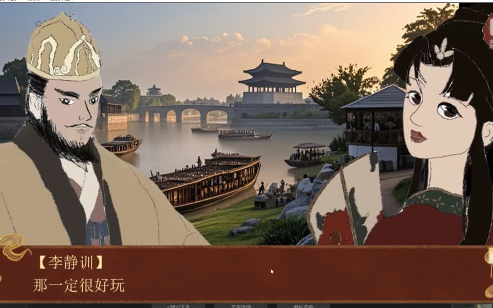
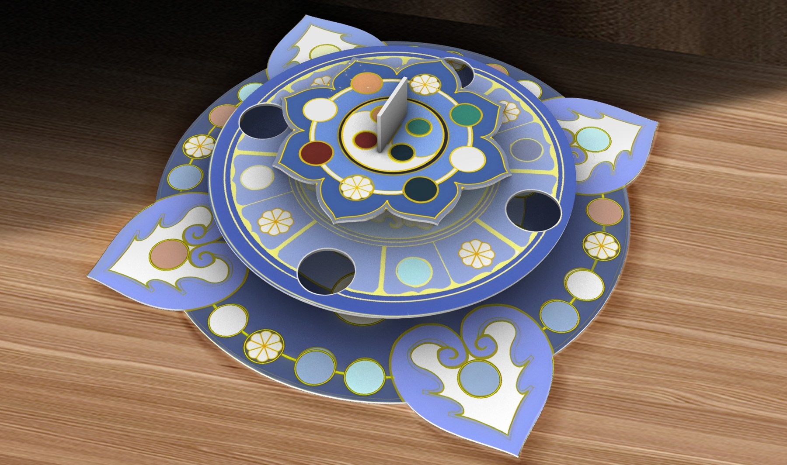
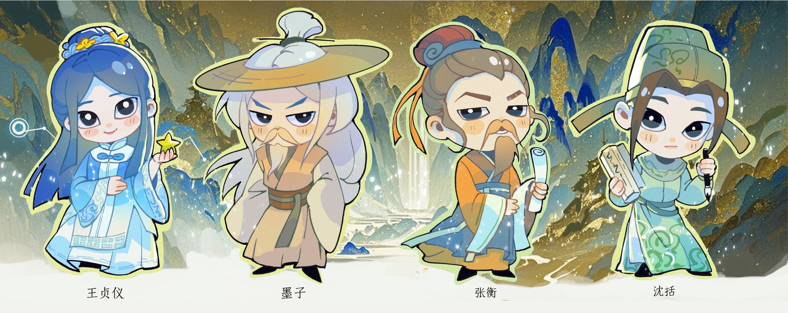
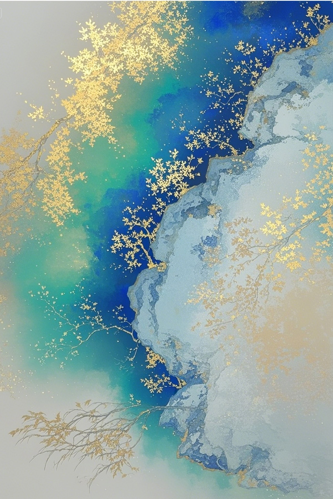
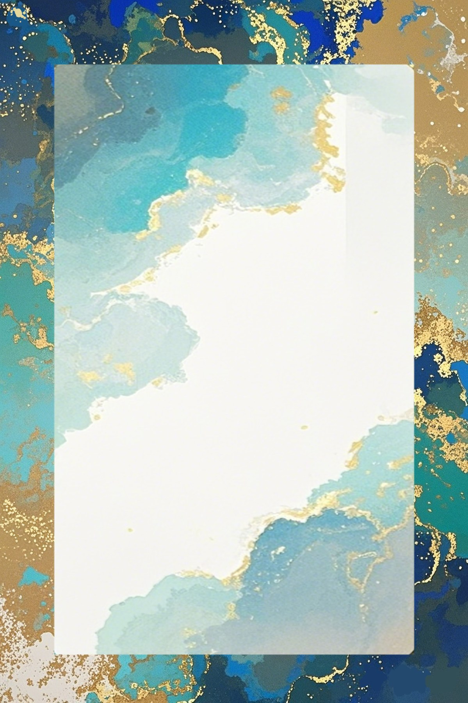

03:32创意设计
创意设计 · 00:15
《古物藏理，游艺启思》将中国古代物理成果融入飞行棋。棋盘围绕沈括、王贞仪、张衡与墨子等人物设计角色和互动问答，通过三层棋盘、特殊区域与知识题目组织游戏体验。
参与组织协调、作品创意、竞品分析、文献阅读、方案设计、技术实现、测试分析与汇报制作。项目分工表中，我在组织协调部分承担 60%，在作品创意、文献阅读和 PPT 制作部分各承担 30%。
下方展示棋盘产品图、人物形象、卡片与背面设计；视频展示棋盘结构与外观。




